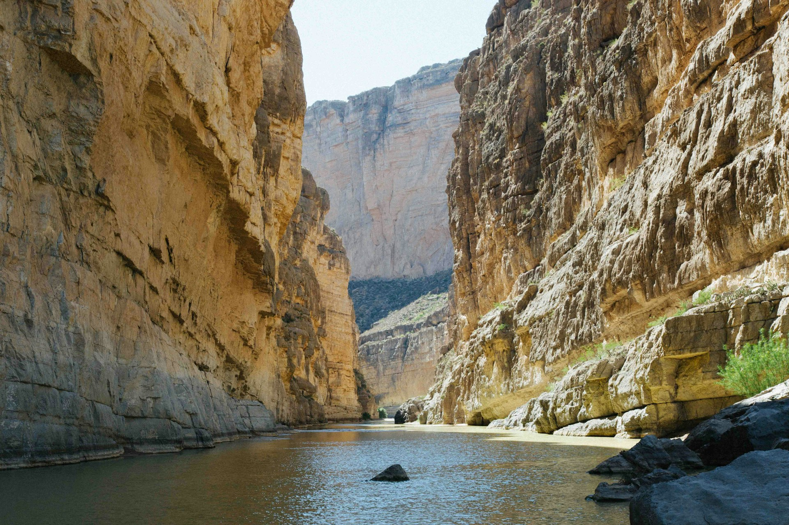
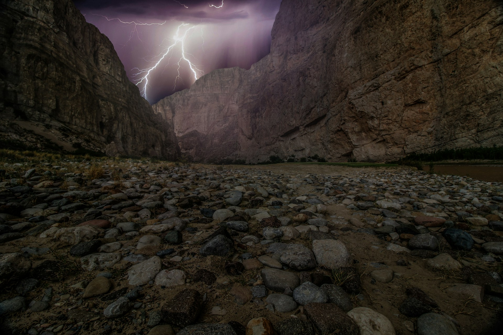

About Big Bend National Park
Here you can provide some detailed information about the destination. Describe the attractions, activities, history, or anything relevant to your visitors.
Santa Elena Canyon
Photo by Kyle Glenn on Unsplash
This canyon is a part of the big bend national park. This canyon is popular both due to its beauty but also because it is so easily accessible by car. It is possible to paddle the river in the canyon with various boats and rafts. It is also possible to take the “boomerang trip” where you can paddle upstream and then return downstream.
Lost Mine Trail

Photo by Sam Goodgame on Unsplash
This trail provides possibilities of various hikes. It is accessible all year, but beware, both bears and mountain lions are in the area. All in all it is a 4.8 miles round trip. If you complete it all it is a three hour trip. Hydrate
Boquillas Canyon
This is the longest and deepest canyon in the big bend park. It has stunning scenery and is also easily accessible. Most of the river within the canyon is calm and camping sites are frequent in this area. Fun fact, this canyon is actually deeper than Grand Canyon.